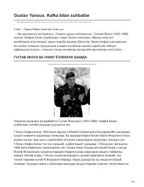

KBGustav Yanouxning Frans Kafka bilan bo'lgan suhbatlari va xotiralari jamlangan asar.
Ushbu asar chexiyalik yozuvchi va musiqachi Gustav Yanouxning Frans Kafka bilan bo'lgan suhbatlari asosida yozilgan xotiralar to'plamidir. Kitobda buyuk yozuvchining ijodiy olami, dunyoqarashi va hayotiy qarashlari haqidagi qimmatli fikrlar jamlangan.